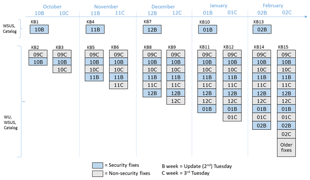

Version: Default* | Print Friendly With Images | Print Friendly Without Images
For: Windows 8.1 (32/64) | Windows 10 (32/64) | Windows 11
Last Reviewed/Updated: 14 Jun 2022 | Published: 14 Jan 2004 | Status: Active
Some Windows vulnerabilities can be exploited without user interaction as soon as the computer is placed online. Therefore, after performing a clean installation of Windows, it is necessary to resolve the known examples of these vulnerabilities before placing the computer online, including before running Windows Update or Microsoft Update.
1.1. Windows Vulnerabilities And Worms
Windows vulnerabilities are flaws in the Windows operating system code that render Windows susceptible to exploitation. The successful exploitation of a Windows vulnerability results in compromise. Toward securing Windows, it is instructive to divide Windows vulnerabilities into two groups: 1.) those that require user interaction to be exploited, and 2.) those that do not require user interaction to be exploited.
For the Windows vulnerabilities that require user interaction to be exploited, compromise requires user interaction on the computer besides placing the vulnerable computer online (i.e., connecting the computer to a network, be it an Intranet and/or the Internet). User interactions that can result in compromise, known as triggers, include attaching external/removable drives or network devices, visiting Web sites, accessing/receiving/opening emails, opening email attachments, creating/accessing/opening/installing/joining/connecting to network resources including but not limited to servers/domains/devices/shares/files/etc. In other words, for the Windows vulnerabilities that require user interaction to be exploited, in the absence of the appropriate user interaction required to trigger exploitation, compromise cannot occur simply by placing the vulnerable computer online.
For the Windows vulnerabilities that do not require user interaction to be exploited, compromise does not require any user interaction on the computer besides placing the vulnerable computer online. In other words, for the Windows vulnerabilities that do not require user interaction to be exploited, there is no trigger and compromise can occur simply by placing the vulnerable computer online.
After installing Windows, a common practice is to place the computer online and run Windows Update to install the latest Update (Windows 8.1), Security Monthly Quality Rollup (Windows 8.1), Cumulative Update (Windows 10/11), Security Updates (8.1/10/11), and non-security updates and fixes Windows (8.1/10/11). Although the intension (to secure Windows) is good, this practice is bad. Why? Because, for the Windows vulnerabilities that do not require user interaction to be exploited, compromise can occur simply by placing the vulnerable computer online, and this includes during the time that Windows Update is running.
Worms are the class of threat that automatically run themselves on, and automatically copy themselves from, computer to computer over a network without user interaction. To accomplishes this, worms exploit vulnerabilities that, themselves, do not require user interaction to be exploited and that allow remote code execution (RCE). First, the worm exploits the vulnerability, then it runs itself on the now compromised computer, including possibly delivering a destructive payload, and then it attempts to propagate itself to other vulnerable computers on the network, again without user interaction.
Worms are extremely dangerous because they can automatically infect a tremendous number of vulnerable networked computers seemingly simultaneously without any user interaction besides placing the vulnerable computers online. Infamous worms that exploit Windows vulnerabilities include:
Worms Blaster, Welchia, Sasser, Conficker, and Wannacry remain so prevalent that even today - years after they have been discovered - vulnerable Windows computers are still being compromised by these worms as soon as they are placed online, including during the time that Windows Update is running.
Fortunately, most of the Windows vulnerabilities that do not require user interaction to be exploited are not wormable (i.e., do not allow RCE and, therefore, are not suitable for worms). Instead, the impact of most Windows vulnerabilities that do not require user interaction to be exploited is to allow either denial of service, elevation of privilege (EOP), information disclosure, security feature bypass, or spoofing. However, wormable Windows vulnerabilities are found every year. For example, CVE-2022-21907 (cve.mitre.org), released in Jan 2022, describes a wormable Windows 10/11 vulnerability. Whether or not a worm will be developed to exploit this vulnerability is anyone's guess.
In some environments, the exploitability (i.e., the likelihood that a vulnerability will be exploited) of a Windows vulnerability that does not require user interaction to be exploited is low. However, in some environments, the exploitability of a Windows vulnerability that does not require user interaction to be exploited is high. In addition, some worms can transfer across gateways/routers. Rather than trying to take environment, exploitability, impact, and other factors into account, and unnecessarily driving oneself mad in the process, a simpler and safer policy has been adopted: to secure a clean installation of Windows per this web page, it is necessary to resolve all known examples of Windows vulnerabilities that do not require user interaction to be exploited before, not after, placing the computer online.
1.2. Windows 8.1 Servicing Model
1.2.1. Windows 8.1 Servicing Model Ending September 2016: Individual Security Updates
On the second Tuesday of each month (a.k.a., Patch Tuesday) through March 2017, Microsoft released a Microsoft Security Bulletin Summary consisting of one or more Microsoft Security Bulletins. A Microsoft Security Bulletin describes a single vulnerability, or group of related vulnerabilities, typically in a Microsoft product. Through September 2016, Microsoft Security Bulletins describing Windows vulnerabilities provided links to one or more Security Updates for Windows. A Security Update for Windows (a.k.a., a patch) is a single file. Upon installation, the Security Update(s) for a Microsoft Security Bulletin resolve (a.k.a, patch) the vulnerability(s) described in the Microsoft Security Bulletin.
Security Updates for Windows can be installed in an automated, batch-like fashion via Windows Update. Security Updates for Windows can also be downloaded via the links in the Microsoft Security Bulletins and installed manually. To secure a clean installation of Windows 8.1 per this web page, it is necessary to install some Security Updates for Windows 8.1 before placing the computer online. This requires downloading and copying the Security Updates for Windows 8.1 to removable media before performing the clean installation of Windows 8.1.
Windows 8.1 Update April 2014 KB2919355 (Windows 8.1 Update) is an update to Windows 8.1 that contains Updates for Windows 8.1, Security Updates for Windows 8.1, and new Windows 8.1 features.
Update Rollup, not
Update, requires Windows 8.1 Update April 2014 KB2919355, does not supersede Windows 8.1 Update April 2014 KB2919355, contains Updates for Windows 8.1, does not contain Security Updates for Windows 8.1, does not resolve any Windows 8.1 vulnerabilities (that do or do not require user interaction to be exploited), is not required for Windows 8.1 to receive future Updates/Security Updates for Windows 8.1, and does not need to be installed before placing the computer online. Toward securing a clean installation of Windows 8.1 per this web page,
Windows 8.1 Updaterefers to Windows 8.1 Update April 2014 KB2919355, not Windows 8.1 Update Rollup November 2014 KB3000850. For additional information on Windows 8.1 Update Rollup November 2014 KB3000850, see November 2014 Update Rollup For Windows RT 8.1, Windows 8.1, And Windows Server 2012 R2 (support.microsoft.com).
1.2.2.1. Security Updates For Windows 8.1 Included In Windows 8.1 Update
The release date of Windows 8.1 Update indicates the cutoff date for the inclusion of Security Updates for Windows 8.1 in Windows 8.1 Update.
| Security Updates For Windows 8.1 Included In Windows 8.1 Update | |
| Windows (Release Date) |
8.1 Update (Gen: 08 Apr 2014) |
|---|---|
| Includes Security Updates For Windows 8.1 (Through Date) |
All through MS14-019. (Through 08 Apr 2014) |
1.2.3. Windows 8.1 Servicing Model Starting October 2016: Bundled Updates And Update Rollups Including Security Fixes
Starting with the Microsoft Security Bulletin Summary For October 2016 (technet.microsoft.com), Microsoft replaced Security Updates for Windows 8.1 with bundled updates and update rollups including security fixes for Windows 8.1, of which there are three types:
| Windows 8.1 Servicing Model Starting October 2016: Bundled Updates And Update Rollups Including Security Fixes Types (1) | |||
| Type | Security Only Quality Update (a.k.a., Security Only) |
Security Monthly Quality Rollup (a.k.a., Monthly Rollup) |
Preview Of Monthly Quality Rollup (a.k.a., Preview Rollup) |
|---|---|---|---|
| Released On | Second Tuesday of the month (a.k.a., B week and Update Tuesday, formerly Patch Tuesday). | Second Tuesday of the month (a.k.a., B week and Update Tuesday, formerly Patch Tuesday). | Third Tuesday of the month (a.k.a., C week). |
| Is/ Contains |
A single update containing all new security fixes for that month. | A single update containing all new security fixes for that month (the same ones included in the security only update released at the same time), as well as fixes from all previous monthly rollups. | An additional monthly rollup containing a preview of new non-security fixes that will be included in the next monthly rollup, as well as fixes from all previous monthly rollups. |
| Available To Public Via |
|
|
|
| Unique KB Number | Yes | Yes | Yes |
| Includes Security Updates/Security Fixes For Windows 8.1 (Through Date) |
That month only. (That month only) |
From MS16-118 through those released on Update Tuesday that month. (From 11 Oct 2016 through Update Tuesday that month) |
|
| (1) Source: More On Windows 7 And Windows 8.1 Servicing Changes (blogs.technet.microsoft.com). | |||
The Windows 8.1 servicing model starting October 2016: bundled updates and update rollups including security fixes by diagram (Source: More On Windows 7 And Windows 8.1 Servicing Changes (blogs.technet.microsoft.com)):

In the Windows 8.1 servicing model starting October 2016: 1.) a Security Monthly Quality Rollup (Monthly Rollup) for Windows 8.1 is a single file that contains new security fixes, and all previous security and non-security fixes for Windows 8.1 back through October 2016; and 2.) a Preview Of Monthly Quality Rollup (Preview Rollup) for Windows 8.1 is a single file that contains new non-security fixes, and all previous security and non-security fixes for Windows 8.1 back through October 2016. In other words, in the Windows 8.1 servicing model starting October 2016, Security Monthly Quality Rollups for Windows 8.1 and Preview Of Monthly Quality Rollups for Windows 8.1 are cumulative back through October 2016. This means that to obtain the security fixes for Windows 8.1 from October 2016 through the present, it is only necessary to install the latest Security Monthly Quality Rollup for Windows 8.1 or subsequent, not previous, Preview Of Monthly Quality Rollup for Windows 8.1.
Compared to the previous Windows 8.1 servicing model of individual Security Updates, the new Windows 8.1 servicing model of Security Monthly Quality Rollups for Windows 8.1 and Preview Of Monthly Quality Rollups for Windows 8.1 are more similar to the Windows 10/11 servicing model of Cumulative Updates for Windows 10/11 in that the Security Monthly Quality Rollups for Windows 8.1 and Preview Of Monthly Quality Rollups for Windows 8.1 are cumulative in nature; however, unlike the Cumulative Updates for Windows 10/11, which are cumulative back through the initial release of the version of Windows 10/11, the Security Monthly Quality Rollups for Windows 8.1 and Preview Of Monthly Quality Rollups for Windows 8.1 are cumulative only back through October 2016.
1.3. Windows 10/11 Servicing Model: Cumulative Updates
Starting in November 2021, Microsoft intends to release a new version (a.k.a., feature update) of the supported versions of Windows 10/11 once a year in the second half of the year. On the second Tuesday of each month, Microsoft releases a Cumulative Update (a.k.a., quality update) for the supported versions of Windows 10/11. Microsoft intends to support each version of Windows 10 Home and Pro with Cumulative Updates for 18 months, and each version of Windows 11 Home and Pro with Cumulative Updates for 24 months:
| Windows 10 Versions Support Status (Last Reviewed/Updated: 14 Jun 2022) |
|||||
| Windows (Build) |
10 Version 1507 (10.0.10240) |
10 Version 1511 (10.0.10586.0) |
10 Version 1607 (10.0.14393.0) |
10 Version 1703 (10.0.15063.0) |
10 Version 1709 (10.0.16299.15) |
|---|---|---|---|---|---|
| General Availability |
29 Jul 2015 | 12 Nov 2015 | 02 Aug 2016 | 11 Apr 2017 | 17 Oct 2017 |
| In Support | No | ||||
| Windows 10 Versions Support Status (Last Reviewed/Updated: 14 Jun 2022) |
|||||
| Windows (Build) |
10 Version 1803 (10.0.17134.1) |
10 Version 1809 (1) (10.0.17763.1) |
10 Version 1809 (2) (10.0.17763.107) |
10 Version 1903 (10.0.18362.30) |
10 Version 1909 (10.0.18363.418) |
|---|---|---|---|---|---|
| General Availability |
30 Apr 2018 |
|
13 Nov 2018 | 21 May 2019 | 12 Nov 2019 |
| In Support | No | ||||
| (1)(2) There was two official releases of Windows 10 Version 1809; 1.) Build 10.0.17763.1 released 02 Oct 2018, and 2.) Build 10.0.17763.107 released 13 Nov 2018. With respect to Microsoft supporting Windows 10 Version 1809 with Cumulative Updates for at least 18 months, the general availability data for both releases of Windows 10 Version 1809 is to be considered 13 Nov 2018. For additional information, see Updated Version Of Windows 10 October 2018 Update Released To Windows Insiders (blogs.windows.com) and Resuming The Rollout Of The Windows 10 October 2018 Update (blogs.windows.com). | |||||
| Windows 10 Versions Support Status (Last Reviewed/Updated: 14 Jun 2022) |
||||
| Windows (Build) |
10 Version 2004 (10.0.19041.264) |
10 Version 20H2 (10.0.19042.508) |
10 Version 21H1 (10.0.19043.928) |
10 Version 21H2 (10.0.19044.1288) |
|---|---|---|---|---|
| General Availability |
27 May 2020 | 20 Oct 2020 | 18 May 2021 | 16 Nov 2021 |
| In Support | No | Yes | ||
| Windows 11 Versions Support Status (Last Reviewed/Updated: 14 Jun 2022) |
|||
| Windows (Build) |
11 Original Release (10.0.22000.194) |
||
|---|---|---|---|
| General Availability |
04 Oct 2021 | ||
| In Support | Yes | ||
In the Windows 10/11 servicing model, a Cumulative Update for Windows 10/11 is a single file that contains new security and non-security fixes, and all previous security and non-security fixes (if there are any), for a version of Windows 10/11. In other words, in the Windows 10/11 servicing model, Cumulative Updates for Windows 10/11 are cumulative back through the initial release of the version of Windows 10/11. This means that to obtain the security (and non-security) fixes for Windows 10/11 from the initial release of the version of Windows 10/11 through the present, it is only necessary to install the latest Cumulative Update for Windows 10/11 for the version of Windows 10/11.
Servicing is the process of installing a Windows Service Pack, Update, Security Monthly Quality Rollup, Cumulative Update, Security Update, non-security update, fix, component, role, etc. Depending on what is being installed, servicing is performed manually by the user and/or automatically by Windows Update. The Servicing Stack is the component of Windows that performs servicing. Like other Windows components, the Servicing Stack is periodically updated. A Servicing Stack Update improves the speed and reliability of servicing.
1.4.1. Starting March 2021, Servicing Stack Updates For Windows 10 Version 2004 And Newer Are Included In The Cumulative Updates For Windows 10 Version 2004 And Newer
Starting in March 2021, the Servicing Stack Updates for Windows 10 Version 2004 and newer are no longer released as standalone Updates. Instead, they are included in the Cumulative Updates for Windows 10 Version 2004 and newer. However, a special Servicing Stack Update for Windows 10 Version 2004, 20H2, and 21H1 (KB5005260) is a prerequisite for installing the latest Cumulative Update for Windows 10 Version 2004, 20H2, and 21H1. The special Servicing Stack Update Windows 10 Version 2004, 20H2, and 21H1 (KB5005260) is not prerequisite for installing the latest Cumulative Update for Windows 10 Version 21H2.
1.4.2. Servicing Stack Updates For Windows 11 Are Included In The Cumulative Updates For Windows 11
The Servicing Stack Updates for Windows 11 are included in the Cumulative Updates for Windows 11.
1.5. Identifying The Security Update Holes In Securing A Clean Installation Of Windows 8.1/10/11
To secure a clean installation of Windows per this web page, it is necessary to resolve the known examples of Windows vulnerabilities that do not require user interaction to be exploited before placing the computer online. Therefore, to secure a clean installation of Windows 8.1, upon installing the Windows 8.1 operating system, Windows 8.1 Update, and the latest Security Monthly Quality Rollup for Windows 8.1 or subsequent, not previous, Preview Of Monthly Quality Rollup for Windows 8.1, it is necessary to identify any security update holes into which Security Updates for Windows 8.1 have not been installed. And to secure a clean installation of Windows 10/11, upon installing the Windows 10 operating system and the latest Cumulative Update for Windows 10/11, it is necessary to identify any security update holes into which Security Updates for Windows 10/11 have not been installed.
1.5.1. The Security Update Hole In Securing A Clean Installation Of Windows 8.1
Windows 8.1 Update resolves all Windows 8.1 vulnerabilities (that do or do not require user interaction to be exploited) through April 08, 2014, which is through MS14-019. The latest Security Monthly Quality Rollup for Windows 8.1 or subsequent, not previous, Preview Of Monthly Quality Rollup for Windows 8.1 resolves all Windows 8.1 vulnerabilities (that do or do not require user interaction to be exploited) from October 2016, which is from MS16-118, through the present. Therefore, after installing Windows 8.1 Update and the latest Security Monthly Quality Rollup for Windows 8.1 or subsequent, not previous, Preview Of Monthly Quality Rollup for Windows 8.1, there exists a security update hole from May 2014 through September 2016, which if from MS14-020 through MS16-117, into which no Security Updates for Windows 8.1 have been installed.
1.5.2. No Security Update Hole In Securing A Clean Installation Of Windows 10/11
The latest Cumulative Update for a supported version of Windows 10/11 resolves all Windows 10/11 vulnerabilities (that do or do not require user interaction to be exploited) from the initial release of the version of Windows 10/11 through the present. Therefore, after installing the latest Cumulative Update for a supported version of Windows 10/11, there does not exist a security update hole into which no Security Updates for Windows 10/11 have been installed.
1.6. Compiling The List Of Security Updates For Windows 8.1 That Resolve Vulnerabilities That Do Not Require User Interaction To Be Exploited
After identifying the security update holes in securing a clean installation of Windows 8.1, the next steps are to list the Microsoft Security Bulletins for Windows 8.1, read the Microsoft Security Bulletins for Windows 8.1 that fall into the date range/Microsoft Security Bulletin number range of the security update holes in securing a clean installation of Windows 8.1 (above), determine if a Security Update for Windows 8.1 resolves a vulnerability that requires, or does not require, user interaction to be exploited, and to make the list of Security Updates for Windows 8.1 that resolve vulnerabilities that do not require user interaction to be exploited:
1.6.1. Listing And Reading The Microsoft Security Bulletins For Windows 8.1
To list the Microsoft Security Bulletins for Windows 8.1:
It is not necessary to read the entire list of Microsoft Security Bulletins for Windows 8.1. Instead, it is only necessary to read the Microsoft Security Bulletins for Windows 8.1 that fall into the date range/Microsoft Security Bulletin number range of the security update holes in securing a clean installation of Windows 8.1 (above).
1.6.2. Determining That A Security Update For Windows Resolves A Vulnerability That Requires User Interaction To Be Exploited
The language in Microsoft Security Bulletins makes it easy to determine if a vulnerability does not require user interaction to be exploited. If language similar to the following appears in a Microsoft Security Bulletin, the Security Update for Windows resolves a vulnerability that requires user interaction to be exploited.
1.6.3. Determining That A Security Update For Windows Resolves A Vulnerability That Does Not Require User Interaction To Be Exploited
The language in Microsoft Security Bulletins makes it difficult to determine if a vulnerability does not require user interaction to be exploited. If language similar to the following appears in a Microsoft Security Bulletin, the Security Update for Windows likely resolves a vulnerability that requires user interaction to be exploited.
Final determination if a vulnerability does not require user interaction to be exploited often requires clicking the vulnerability's Common Vulnerabilities And Exposures (CVE) (cve.mitre.org) link, National Vulnerability Database (NVD) (nvd.nist.gov) link, and examining, for example, the Attack Vector (AV), Privileges Required (PR)/Authentication (AU), and User Interaction (UI) analysis data.
If it is still unclear if a vulnerability does not require user interaction to be exploited, to secure a clean installation of Windows per this web page, it is necessary to play it safe and to include the Security Update for Windows in the list of Security Updates for Windows 8.1 that resolve vulnerabilities that do not require user interaction to be exploited.
1.6.4. Policy On Security Update For Windows Supersedence And On Adding All Of The Security Updates In A Microsoft Security Bulletin To The List
Sometimes a Microsoft Security Bulletin consists of one Security Update for Windows. Sometimes a Microsoft Security Bulletin consists of multiple Security Updates for Windows. Sometimes a new Security Update for Windows replaces an old Security Update for Windows. And sometimes when a Microsoft Security Bulletin consists of multiple Security Updates for Windows, only some of the Security Updates for Windows resolve Windows vulnerabilities that do not require user interaction to be exploited.
When a new Security Update for Windows replaces an old Security Update for Windows, it is said that the new Security Update for Windows supersedes (i.e., takes the place of/replaces) the old Security Update for Windows. Security Update for Windows supersedence information is presented in the Updates Replaced column of the Affected Software section of the Microsoft Security Bulletin.
When an old Security Update for Windows is superseded by a new Security Update for Windows, it is not necessary to install both the old superseded and the new superseding Security Updates for Windows. Instead, it is only necessary to install the new superseding Security Update for Windows. If the old superseded Security Update for Windows is already installed, it is not necessary to uninstall it. Instead, leave the old superseded Security Update for Windows installed and simply install the new superseding Security Update for Windows. When finished, both the old superseded and the new superseding Security Updates for Windows are listed as being installed. In other words, there is nothing wrong with installing both the old superseded and the new superseding Security Updates for Windows except that it is extra work.
Over time, the supersedence of Security Updates for Windows has become increasingly confounding. Moreover, there have been a couple of instances where the stated supersedence of Security Updates for Windows is questionable and/or appears to be incorrect. Rather than trying to decipher the correct supersedence of Security Updates for Windows, and unnecessarily driving oneself mad in the process, a simpler and safer policy has been adopted: ignore supersedence and list all of the Microsoft Security Bulletins that include Security Updates for Windows that resolve Windows vulnerabilities that do not require user interaction to be exploited.
Lastly, when a Microsoft Security Bulletin consists of multiple Security Updates for Windows, and some of the Security Updates for Windows resolve Windows vulnerabilities that do not require user interaction to be exploited, and some of the Security Updates for Windows resolve Windows vulnerabilities that require user interaction to be exploited; rather than omitting the Security Updates for Windows that resolve Windows vulnerabilities that require user interaction to be exploited, and possibly having someone wonder if a mistake was made, a simpler and less confusing policy has been adopted: list all of the Security Updates for Windows included in a Microsoft Security Bulletin, including those that resolve Windows vulnerabilities that require user interaction to be exploited.
1.7. Overview: How To Secure A Clean Installation Of Windows 8.1/10/11
Toward securing Windows, it is instructive to divide Windows vulnerabilities into two groups: 1.) those that require user interaction to be exploited, and 2.) those that do not require user interaction to be exploited. The Windows vulnerabilities that do not require user interaction to be exploited must be resolved offline (i.e., before placing the computer online). For the Windows vulnerabilities that require user interaction to be exploited, provided the user has not interacted with the computer in any way that could result in compromise, they can be resolved by placing the computer online and running Windows Update. The following are overviews of how to secure a clean installation of Windows 8.1/10/11 per this web page.
1.7.1. Overview: How To Secure A Clean Installation Of Windows 8.1
1.7.2. Overview: How To Secure A Clean Installation Of Windows 10/11
2. Files To Download And Copy To CD/DVD Before Performing The Clean Installation Of Windows 8.1/10/11
To secure a clean installation of Windows per this web page, it is necessary to resolve the known examples of Windows vulnerabilities that do not require user interaction to be exploited before placing the computer online. This requires downloading and copying one or more files to removable media before performing the clean installation of Windows 8.1/10/11. Because files on CDs/DVDs are far more difficult manipulate by malicious software/users than files on external hard disk drives and flash memory drives, CDs/DVDs are the removable media of choice.
2.1. Files To Download And Copy To CD/DVD Before Performing The Clean Installation Of Windows 8.1
Using a computer that is not compromised, download and copy the following files to CD/DVD before performing the clean installation of Windows 8.1:
With Updatein
Windows 8.1 With Updatemeans. Toward securing a clean installation of Windows 8.1 per this web page,
Windows 8.1 With Updaterefers to the Windows 8.1 With Update product DVD that includes Update Rollup November 2014 KB3000850 and/or the Windows 8.1 With Update product DVD that does not include Update Rollup November 2014 KB3000850. For additional information on Windows 8.1 Update April 2014 KB2919355 and Windows 8.1 Update Rollup November 2014 KB3000850, see Windows 8.1 Update (above).
2.2. Files To Download And Copy To CD/DVD Before Performing The Clean Installation Of Windows 10
Using a computer that is not compromised, download and copy the following files to CD/DVD before performing the clean installation of Windows 10:
2.3. Files To Download And Copy To CD/DVD Before Performing The Clean Installation Of Windows 11
Using a computer that is not compromised, download and copy the following files to CD/DVD before performing the clean installation of Windows 11:
3. Secure A Clean Installation Of Windows 8.1/10/11
3.1. Secure A Clean Installation Of Windows 8.1
clearcompressionflag.exe file simply runs and does not indicate "completed." Therefore, after double clicking clearcompressionflag.exe, wait 30 seconds, and then install the next file.clearcompressionflag.exe file.With Updatein
Windows 8.1 With Updatemeans. Toward securing a clean installation of Windows 8.1 per this web page,
Windows 8.1 With Updaterefers to the Windows 8.1 With Update product DVD that includes Update Rollup November 2014 KB3000850 and/or the Windows 8.1 With Update product DVD that does not include Update Rollup November 2014 KB3000850. For additional information on Windows 8.1 Update April 2014 KB2919355 and Windows 8.1 Update Rollup November 2014 KB3000850, see Windows 8.1 Update (above).
The update is not applicable to you computer.This is OK. Skip that Security Update for Windows and proceed with the next one.
3.2. Secure A Clean Installation Of Windows 10
3.3. Secure A Clean Installation Of Windows 11
4. Resources And Additional Information
{kind=link}